1,5 milyon il əvvəl – e.ə. IV minillik
Daş dövrü
İnsan daşı yonur, odu ram edir, qayaya ilk rəsmini çəkir.
Guvvatli Center zaman səyahəti
Azıx mağarasındakı ilk ocaqdan bu günə qədər bir yarım milyon illik yol. Aşağı sürüşdür: illər dəyişdikcə dövlətlər, hökmdarlar, döyüşlər və abidələr gözünün qabağından keçəcək.
Bu torpaqda insan daş alətdən kosmik peykə qədər yol gəlib. Yol boyu dövlətlər qurulub və dağılıb, şəhərlər salınıb, dastanlar yazılıb. Biz bu yolu əvvəldən axıra, addım-addım gedəcəyik.
Azıx mağarasındakı ən qədim daş alətlərin yaşı.
Bu torpaqdakı ilk böyük dövlətin adı yazılı mənbədə çəkilir.
Müsəlman Şərqində ilk parlamentli respublikanın ömrü.
Dövlət müstəqilliyinin bərpa olunduğu gün.
Səhifəni aşağı sürüşdür. Sən endikcə sağdakı şkala ili göstərir, arxa fon isə həmin dövrə keçir. Şəklə toxunsan, tam ölçüdə açılır.
Şkalanın oxlarına və ya klaviaturada ↓ ↑ düymələrinə bas. Hər basış səni növbəti dövrə aparır.
Yuxarıdakı «Musiqi» düyməsini bas. Ney, tar və dəf dövr dəyişdikcə bir-birini əvəz edir.
1,5 milyon il əvvəl – e.ə. IV minillik
İnsan daşı yonur, odu ram edir, qayaya ilk rəsmini çəkir.
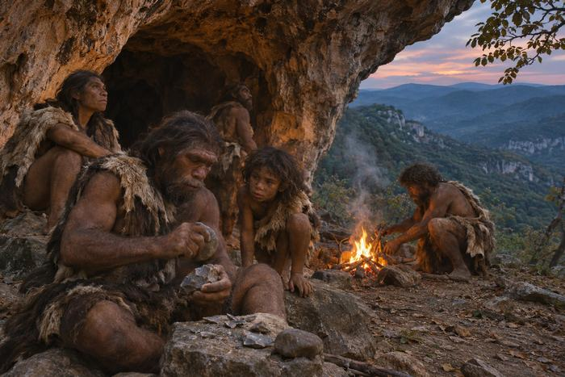
1,5 milyon il əvvəlPaleolit
Azərbaycan insanın ən qədim məskənlərindən biridir. Qarabağdakı Azıx mağarasının ən alt qatlarından çay daşından düzəldilmiş kobud alətlər tapılıb. Onların yaşı milyon ildən çoxdur və bu mədəniyyət yaxınlıqdakı çayın adı ilə Quruçay mədəniyyəti adlanır. 1968-ci ildə arxeoloq Məmmədəli Hüseynov burada qədim insanın alt çənə sümüyünü tapdı. Sümüyün sahibinə Azıxantrop, yəni Azıx adamı deyirlər.
Quruçay dərəsi, Qarabağ
Dünyada bu vaxtYer üzündə hələ nə əkin var, nə şəhər. İnsanlar ovla və yığıcılıqla dolanır.
SualAzıx mağarası
Azıxantropun çənə sümüyünü hansı arxeoloq tapıb?
Məmmədəli Hüseynov 1968-ci ildə Azıx mağarasında qazıntı zamanı bu tapıntını üzə çıxarıb.
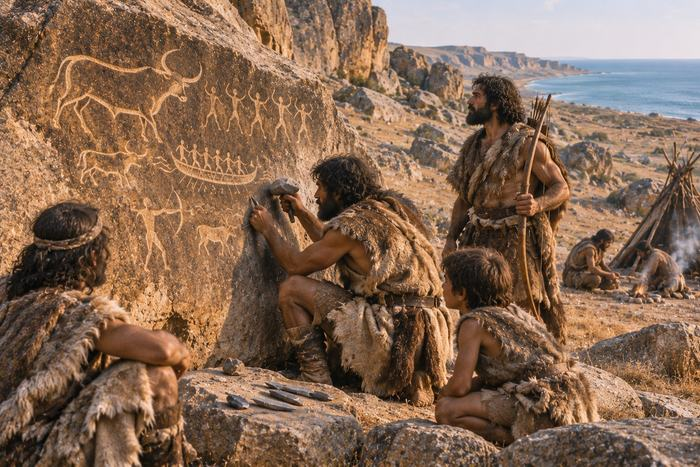
e.ə. XII–VI minilliklərMezolit
Buz dövrü bitir, iqlim istiləşir. Xəzər sahilindəki Qobustan qayalarında yaşayan ovçular gördüklərini daşa döyürlər: vəhşi öküzlər, maral ovu, əl-ələ tutub rəqs edən insanlar və uzun qayıqlar. Burada 6 mindən çox qayaüstü rəsm var. Ox və kaman bu dövrdə yaranır, insan iti əhliləşdirir. Qobustandakı Qavaldaş isə ən qədim musiqi alətlərindən sayılır: ona vuranda dəf kimi səs verir.
Qobustan, Xəzər sahili
Dünyada bu vaxtYaxın Şərqdə insanlar ilk dəfə buğda əkməyə başlayır.
SualQobustan qayaları
Qobustanda vuranda musiqi səsi verən daşın adı nədir?
Qavaldaş boşluq üzərində dayanan yastı əhəngdaşıdır. Ona kiçik daşla vuranda cingiltili səs çıxır.
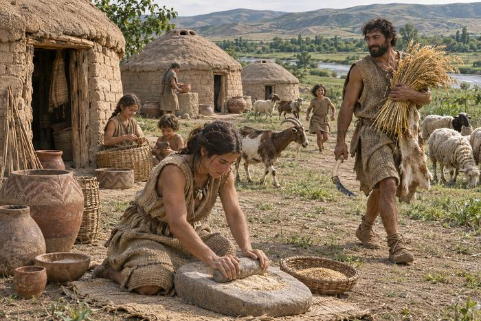
e.ə. VII–IV minilliklərNeolit
İnsan artıq yalnız ovçu deyil. Kür çayı boyunca, indiki Ağstafa, Tovuz və Qazax ərazisində ilk əkinçi kəndləri yaranır. Bu kəndlərin sakinləri dairəvi çiy kərpic evlərdə yaşayır, buğda və arpa əkir, qoyun-keçi saxlayır, gildən qab düzəldirlər. Arxeoloqlar bu mədəniyyəti ilk tapıldığı yerin adı ilə Şomutəpə mədəniyyəti adlandırıblar. Eneolit dövründə insan ilk metalı, misi əritməyi öyrənir.
Kür vadisi: Şomutəpə, Göytəpə
Dünyada bu vaxtMesopotamiyada ilk şəhərlər hələ qurulmayıb. Yazı yoxdur.
e.ə. IV–I minilliklər
Metal əriyir, kurqanlar ucalır, tayfalar ittifaqlarda birləşir.
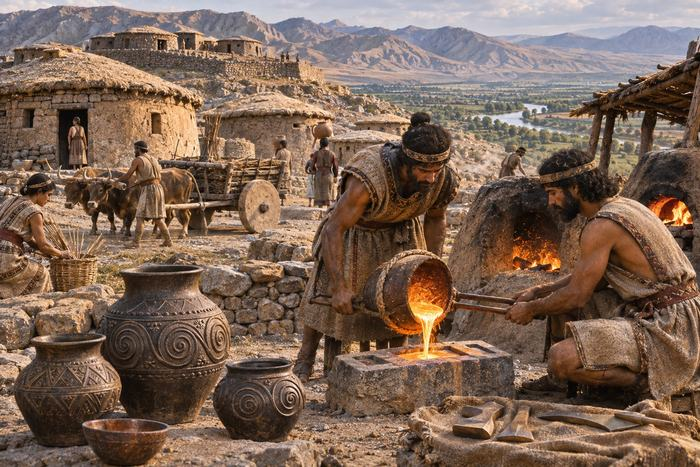
e.ə. IV–II minilliklərTunc dövrü
Misə qalay qatılır və tunc alınır: alətlər də, silahlar da möhkəmlənir. Kür və Araz çaylarının arasında yaranan mədəniyyət Qafqazdan Suriyaya qədər yayılır. Onu qara, parlaq cilalanmış saxsı qablarından tanıyırlar. İnsanlar atı minik heyvanına çevirir, yaylaq maldarlığı yaranır, tayfa başçıları kurqanlarda dəfn olunur. Dəmir dövrünə keçiddə Qarabağda və Gəncəbasarda Xocalı-Gədəbəy mədəniyyəti çiçəklənir.
Kür və Araz çayları arası
Dünyada bu vaxtMisirdə Xeops piramidası tikilir, şumerlər mixi yazını yaradır.
SualKür-Araz mədəniyyəti
Tunc hansı iki metalın ərintisidir?
Misə təxminən onda bir hissə qalay qatanda ondan xeyli möhkəm ərinti, tunc alınır.
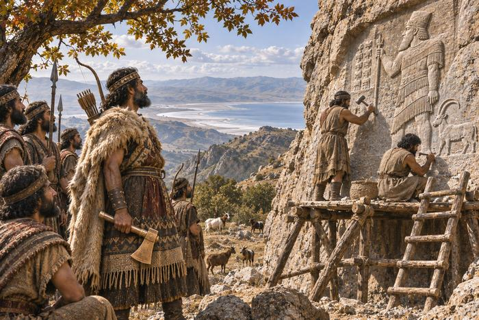
e.ə. III minillikİlk tayfa ittifaqları
Urmiya gölünün cənubunda, Zaqros dağlarının ətəklərində yaşayan tayfalar ittifaqlarda birləşir. Şumer dastanlarında dağların arxasındakı zəngin Aratta ölkəsindən danışılır. Lullubilərin hökmdarı Anubanini qələbəsini qayaya həkk etdirir. Kutilər isə e.ə. XXII əsrdə Mesopotamiyaya enir, Akkad dövlətinə son qoyur və təxminən yüz il İkiçayarasını idarə edirlər. Bunlar dövlətçiliyə aparan ilk addımlardır.
Urmiya gölü hövzəsi
Dünyada bu vaxtHind vadisində Mohenco-Daro şəhəri çiçəklənir.
e.ə. IX əsr – eramızın III əsri
Manna, Midiya, Atropatena, Albaniya: dövlətçiliyin ilk min ili.
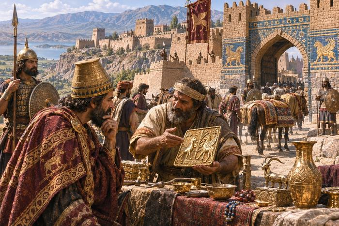
e.ə. IX–VII əsrlərDövlət
Urmiya gölünün cənubunda Azərbaycan ərazisinin ilk böyük dövləti yaranır. Assur mənbələri Mannanın adını ilk dəfə e.ə. 843-cü ildə çəkir. İki güclü qonşu, Assuriya və Urartu onu ələ keçirməyə çalışır, mannalılar isə gah vuruşur, gah da ittifaq bağlayırlar. Hökmdar İranzunun dövründə ölkə güclənir. Manna ustalarının qızıl işləri Ziviyə dəfinəsində bu günə qədər qalıb. E.ə. VII əsrin sonunda Manna Midiyanın tərkibinə qatılır.
Paytaxt: İzirtu
Dünyada bu vaxtYunanlar ilk Olimpiya oyunlarını keçirir (e.ə. 776), finikiyalılar Karfageni salır.
SualManna
Manna dövlətinin paytaxtı hansı şəhər idi?
İzirtu Urmiya gölünün cənubunda yerləşirdi. Ekbatan Midiyanın, Qazaka isə Atropatenanın paytaxtı olub.
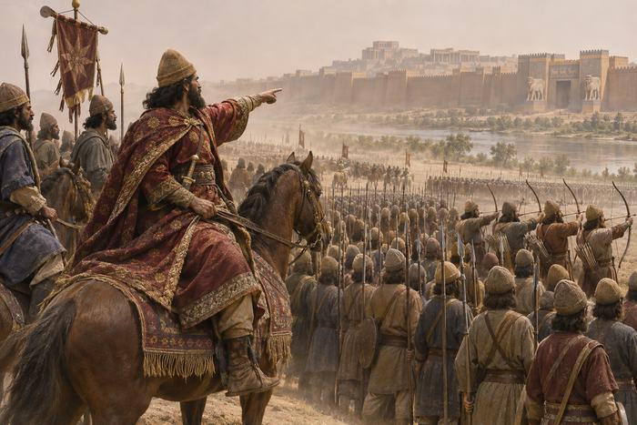
e.ə. 670-ci illər – 550Dövlət
E.ə. 670-ci illərdə Kaştaritinin başçılığı ilə Assuriyaya qarşı üsyan qalxır və Midiya dövləti yaranır. Hökmdar Kiaksar nizami ordu qurur: piyadaları, süvariləri və oxatanları ayrı dəstələrə bölür. E.ə. 612-ci ildə o, Babilistanla birlikdə Assuriyanın paytaxtı Ninevanı alır. Midiya Kiçik Asiyadan Orta Asiyaya qədər uzanan nəhəng dövlətə çevrilir, Manna və Skif padşahlığı onun tərkibinə keçir. Ölkədə maqlar adlanan kahinlərin böyük nüfuzu var.
Paytaxt: Ekbatan
Dünyada bu vaxtBabildə II Navuxodonosor hökmranlıq edir, Afinada Solon qanunlar yazır.
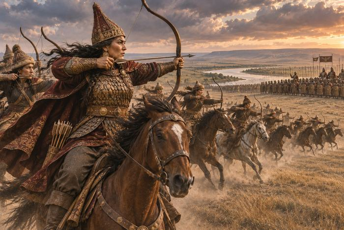
e.ə. 550–330İmperiya
E.ə. 550-ci ildə II Kir Midiyanı tutur və Azərbaycan torpaqları Əhəməni imperiyasının satraplıqlarına bölünür. Herodotun yazdığına görə, Kir e.ə. 530-cu ildə massagetlərin hökmdarı Tomrislə döyüşdə həlak olur. I Daranın dövründə Midiyada Fravartişin başçılığı ilə böyük üsyan baş verir, hökmdar bu hadisələri Bisütun qayasına yazdırır. E.ə. 331-ci ildə Qavqamela döyüşündə Midiya satrapı Atropatın dəstələrində albanlar da vuruşur. Bu, albanların adının tarixdə ilk çəkilməsidir.
Satraplıqlar: Midiya, Kaspiana
Dünyada bu vaxtYunan-İran müharibələri gedir, Afinada Parfenon tikilir.
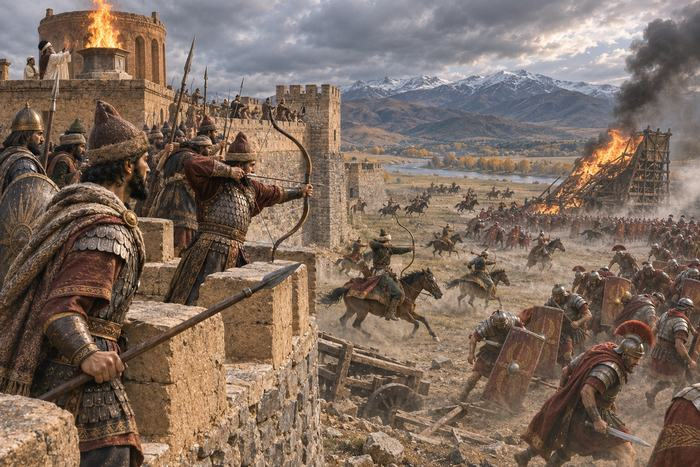
e.ə. IV əsr – eramızın III əsriDövlət
Makedoniyalı İsgəndər Əhəməni imperiyasını darmadağın edir, amma Midiyanın şimalını tuta bilmir. Buranın satrapı Atropat hakimiyyətini qoruyur və İsgəndərin ölümündən sonra müstəqil dövlət qurur. Yunanlar bu ölkəni onun adı ilə Atropatena adlandırırlar. Alimlərin çoxu Azərbaycan adının buradan gəldiyini düşünür: Atropatena, Adurbadaqan, Azərbaycan. E.ə. 36-cı ildə Roma sərkərdəsi Antoni böyük ordu ilə Fraaspa şəhərini mühasirəyə alır, lakin məğlub olub geri çəkilir.
Paytaxt: Qazaka
Dünyada bu vaxtİsgəndərin imperiyası sərkərdələri arasında bölünür, Çində Böyük Səddin tikintisi başlayır.
SualAtropatena
Alimlərin çoxuna görə Azərbaycan adı hansı dövlətin adından yaranıb?
Atropatena adı əsrlər boyu dəyişib: Adurbadaqan, Azərbayqan və nəhayət Azərbaycan.
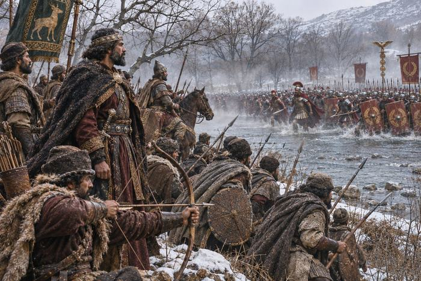
e.ə. IV əsr – eramızın VIII əsriDövlət
Şimalda, Kürdən Qafqaz dağlarına və Xəzərə qədər uzanan torpaqlarda Albaniya dövləti yaranır. Yunan coğrafiyaçısı Strabon yazır ki, burada 26 tayfa yaşayır və hamısını bir hökmdar idarə edir. Paytaxt Qəbələ möhkəm divarları olan böyük şəhərdir. E.ə. 66-cı ildə Roma sərkərdəsi Pompey Albaniyaya soxulur, hökmdar Oroysun qoşunu onu Kür sahilində qarşılayır. Roma buranı heç vaxt tam tabe edə bilmir. Eramızın I əsrində Qobustan qayasına yazı həkk edən legionerlər Romanın çatdığı ən şərq nöqtəsini qeyd ediblər.
Paytaxt: Qəbələ
Dünyada bu vaxtRoma Aralıq dənizinin sahibidir, Yuli Sezar Qalliyanı fəth edir.
III–XI əsrlər
Sədlər, xilafət, Babəkin qalası və ilk müstəqil sülalələr.
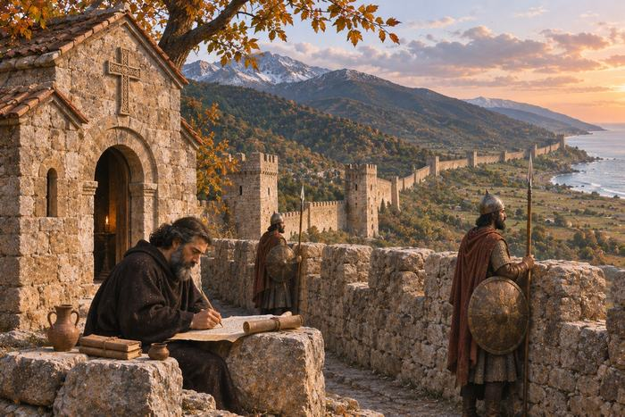
IV–VII əsrlərErkən orta əsrlər
IV əsrdə hökmdar Urnayr xristianlığı dövlət dini elan edir və Albaniya ilk xristian ölkələrindən birinə çevrilir. V əsrdə 52 hərfli alban əlifbası yaranır, məktəblər açılır. 488-ci ildə III Vaçaqanın çağırdığı Aluen məclisi ölkənin qanunlarını qəbul edir. Bu əsrlərdə Albaniya Sasani imperiyasından asılıdır. Sasanilər şimaldan gələn köçəriləri saxlamaq üçün dağla dəniz arasında nəhəng sədlər çəkdirir: Dərbənd, Gilgilçay, Beşbarmaq. VII əsrdə Girdiman hakimi Cavanşir Albaniyanı yenidən gücləndirir və üç böyük dövlətin arasında müstəqil siyasət yürüdür.
Paytaxt: Qəbələ, sonra Bərdə
Dünyada bu vaxtQərbi Roma imperiyası süqut edir (476), Ərəbistanda İslam yaranır (610).
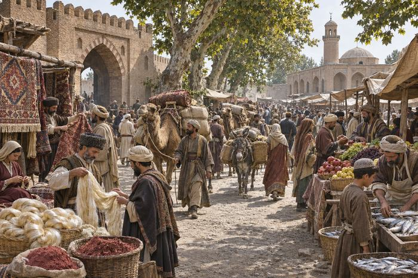
VII–IX əsrlərXilafət
VII əsrin ortalarında ərəb orduları Sasani imperiyasını dağıdır və Azərbaycana daxil olur. 705-ci ildə Albaniya dövləti ləğv edilir, ölkə Ərəb xilafətinin vilayətlərinə çevrilir. Şimalda xilafət Xəzər xaqanlığı ilə uzun müharibələr aparır. İslam dini yayılır, şəhərlərdə məscidlər və mədrəsələr tikilir. Bərdə Qafqazın ən böyük ticarət şəhərinə çevrilir, müasirləri onu «Arranın anası» adlandırırlar. 743-cü ildə Şamaxıda tikilən Cümə məscidi Qafqazın ən qədim məscidlərindən biridir.
Mərkəz: Bərdə
Dünyada bu vaxtXilafət İspaniyadan Hindistana qədər uzanır, Çində Tan sülaləsinin qızıl dövrüdür.
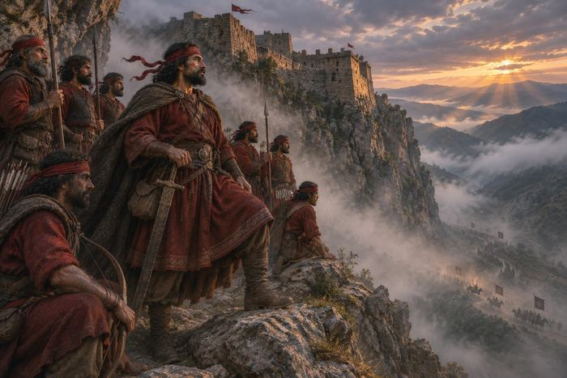
816–837Azadlıq hərəkatı
Xilafətin ağır vergilərinə və zülmünə qarşı xürrəmilər hərəkatı başlayır. 816-cı ildə hərəkatın başına Babək keçir. Onun mərkəzi buludların arasındakı Bəzz qalasıdır: qalaya yalnız bir nəfərin keçə biləcəyi dar cığırla çıxmaq olur. İyirmi ildən çox müddətdə Babək xilafətin üstünə göndərdiyi orduları bir-bir məğlub edir. Xəlifə Mötəsim ən yaxşı sərkərdəsi Afşini ona qarşı yollayır. 837-ci ilin avqustunda Bəzz süqut edir, Babək ələ keçirilir və 838-ci ildə Samirə şəhərində edam olunur. Xalq onu azadlıq qəhrəmanı kimi yadda saxlayıb.
Bəzz qalası, Qaradağ
Dünyada bu vaxtAvropada Böyük Karlın imperiyası parçalanır, vikinqlər sahilləri talayır.
SualBabək və xürrəmilər
Babəkin baş qalası hansı idi?
Bəzz qalası Araz çayının cənubunda, Qaradağ dağlarında 2 300 metrdən yüksəkdə yerləşir.
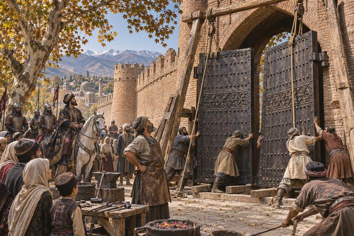
IX–XI əsrlərDövlətlər
Xilafət zəifləyir və Azərbaycan torpaqlarında müstəqil dövlətlər yaranır. Şimalda Şirvanşahlar, cənubda əvvəl Sacilər, sonra Salarilər və Rəvvadilər, Kürlə Araz arasında isə Şəddadilər hökm sürür. Sacilər ilk dəfə Dərbənddən Zəncana qədər bütün Azərbaycan torpaqlarını bir dövlətdə birləşdirir. Şəhərlər böyüyür: Gəncə, Təbriz, Şamaxı, Bərdə və Ərdəbil karvan yollarının əsas dayanacaqlarıdır.
Şamaxı, Ərdəbil, Təbriz, Gəncə
Dünyada bu vaxtKiyev Rus dövləti yaranır, İbn Sina «Tibb qanunu»nu yazır.
Orta əsrlərin ən uzunömürlü dövlətlərindən biri: təxminən 680 il yaşayıb.
Yusif ibn Əbu Sacın dövründə bütün Azərbaycan torpaqları bir dövlətdə birləşdi.
Mərzban ibn Məhəmmədin dövründə rus dəstələri Xəzərdən Kürlə qalxıb Bərdəyə hücum etdi.
Təbriz paytaxt oldu. 1042-ci ilin dağıdıcı zəlzələsindən sonra şəhər yenidən quruldu.
1063-cü ildə dəmirçi İbrahim məşhur Gəncə qapılarını düzəltdi.
XI–XV əsrlər
Atabəylər, monqol atlıları, Təbriz sarayları və Nizaminin beytləri.
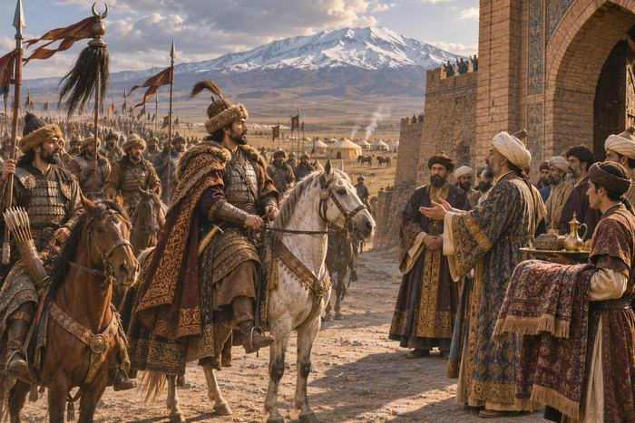
XI–XII əsrlərİmperiya
Orta Asiyadan gələn oğuz türkləri Böyük Səlcuq imperiyasını qurur. 1054-cü ildə Sultan Toğrul bəy Təbrizə daxil olur, Rəvvadi hökmdarı ona tabe olur. 1071-ci ildə Sultan Alp Arslan Malazgird döyüşündə Bizansı məğlub edir və türklərə Anadolunun qapısını açır. Azərbaycana çoxlu oğuz tayfası köçür, burada yaşayan türk tayfaları ilə qaynayıb-qarışır. Türk dili ölkənin hər yerində əsas danışıq dilinə çevrilir. Azərbaycan xalqının formalaşması bu əsrlərdə başa çatır.
Təbriz, Gəncə
Dünyada bu vaxtNormanlar İngiltərəni tutur (1066), ilk Səlib yürüşü başlayır (1096).
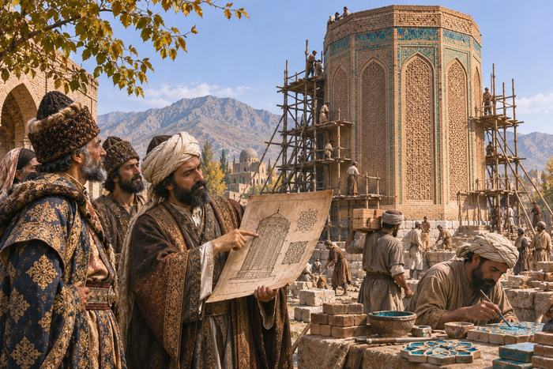
1136–1225Dövlət
Səlcuq şahzadəsinə atabəy, yəni tərbiyəçi təyin olunan Şəmsəddin Eldəniz qısa vaxtda bütün Azərbaycanın əsl hakiminə çevrilir. Oğlu Məhəmməd Cahan Pəhləvanın dövründə dövlət ən güclü çağını yaşayır. Bu, Azərbaycan mədəniyyətinin intibah dövrüdür. Gəncədə Nizami «Xəmsə»ni yazır, Məhsəti rübai deyir, Şirvanda Xaqani qəsidələri ilə məşhurlaşır. Memar Əcəmi Naxçıvanda Möminə xatın türbəsini ucaldır. Bakıda Qız qalası Xəzərə baxır.
Paytaxt: Naxçıvan, sonra Təbriz
Dünyada bu vaxtSəlahəddin Əyyubi Qüdsü alır (1187), Parisdə Notr-Dam kilsəsi tikilir.
SualAtabəylər dövləti
Möminə xatın türbəsinin memarı kimdir?
Əcəmi Əbubəkr oğlu Naxçıvani 1186-cı ildə bu türbəni Atabəy Cahan Pəhləvanın sifarişi ilə tikib.
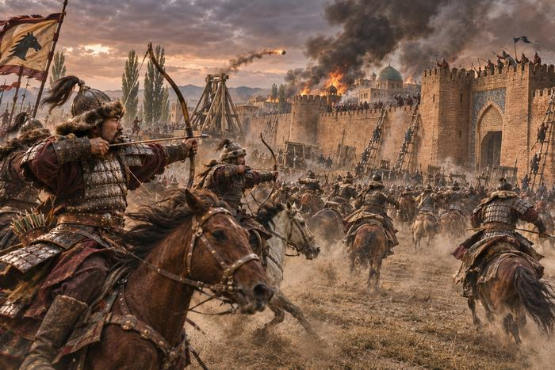
1220–1239Yürüş
1220-ci ildə Çingiz xanın sərkərdələri Cəbə və Subutay iyirmi minlik süvari ilə Azərbaycana soxulur. Marağa, Ərdəbil, Beyləqan və Şamaxı viran qalır. Təbriz xərac verib xilas olur. 1225-ci ildə Xarəzmşah Cəlaləddin Atabəylər dövlətinə son qoyur. 1231-ci ildə Gəncədə sənətkar Bəndərin başçılığı ilə ona qarşı üsyan qalxır. Elə həmin il monqollar ikinci dəfə gəlir. Gəncəlilər şəhəri uzun müddət müdafiə edir, düşmənə qalmasın deyə evlərini özləri yandırırlar. 1239-cu ilə qədər bütün Azərbaycan monqolların əlinə keçir.
Marağa, Beyləqan, Gəncə, Şamaxı
Dünyada bu vaxtMonqol imperiyası Çindən Macarıstana qədər uzanır.
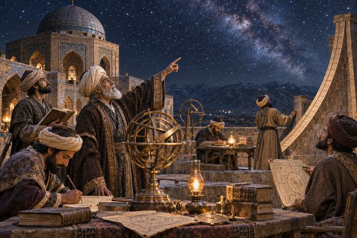
1256–1357Dövlət
1256-cı ildə Çingiz xanın nəvəsi Hülaku xan yeni dövlət qurur və Azərbaycan onun mərkəzinə çevrilir. Paytaxt əvvəl Marağa, sonra Təbriz olur. Hülaku xan alim Nəsirəddin Tusiyə rəsədxana tikdirir: 1259-cu ildə işə başlayan Marağa rəsədxanasında müxtəlif ölkələrdən gəlmiş alimlər ulduzları müşahidə edir, kitabxanasında yüz minlərlə əlyazma toplanır. Qazan xan 1295-ci ildə İslamı qəbul edir və islahatlar keçirir. Təbriz İpək yolunun ən böyük şəhərlərindən birinə çevrilir, Venesiya və Genuya tacirləri burada ticarət evləri açır.
Paytaxt: Marağa, sonra Təbriz
Dünyada bu vaxtMarko Polo Təbrizdən keçib Çinə gedir, Avropada ilk universitetlər açılır.
SualElxanilər və Marağa rəsədxanası
Marağa rəsədxanasını hansı alim qurub?
Nəsirəddin Tusi burada «Zici-Elxani» ulduz cədvəlini tərtib edib. Onun riyazi üsullarından sonralar Kopernik də faydalanıb.
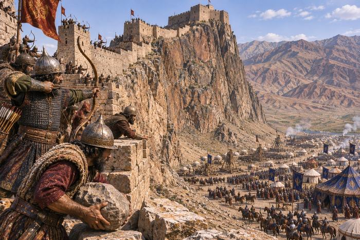
1385–1405Müdafiə
Elxanilərdən sonra ölkəni Cəlairilər idarə edir. 1385-ci ildə Qızıl Orda xanı Toxtamış Təbrizi talayır, bir il sonra isə Əmir Teymur gəlir. Naxçıvandakı Əlincə qalası ona təslim olmur. Sıldırım qayanın başındakı qala 1387-ci ildən 1401-ci ilə qədər, on dörd il mühasirədə dayanır. Şimalda Şirvanşah I İbrahim ağıllı siyasət yürüdür: Teymurla ittifaq bağlayıb Şirvanı dağıntıdan qoruyur. Bu illərdə şair İmadəddin Nəsimi ana dilində insanın ucalığından yazır.
Əlincə qalası, Naxçıvan
Dünyada bu vaxtTeymur Ankara döyüşündə Osmanlı sultanı Bayəzidi əsir götürür (1402).
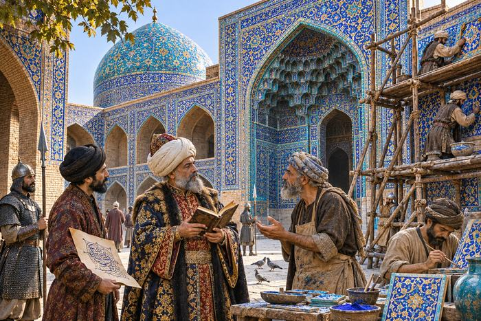
1410–1468Dövlət
Qaraqoyunlu tayfa ittifaqının başçısı Qara Yusif əvvəl Teymurun nəvəsini, sonra Cəlairi sultanını məğlub edir. 1410-cu ildə paytaxtı Təbriz olan Azərbaycan Qaraqoyunlu dövləti yaranır. Cahanşahın dövründə dövlətin sərhədləri Herata qədər çatır. O həm hökmdar, həm də «Həqiqi» təxəllüsü ilə ana dilində yazan şairdir. 1465-ci ildə Təbrizdə Göy məscid tikilir: firuzəyi kaşılarına görə onu «İslamın firuzəsi» adlandırırlar.
Paytaxt: Təbriz
Dünyada bu vaxtQutenberq çap dəzgahını ixtira edir, Osmanlılar İstanbulu fəth edir (1453).
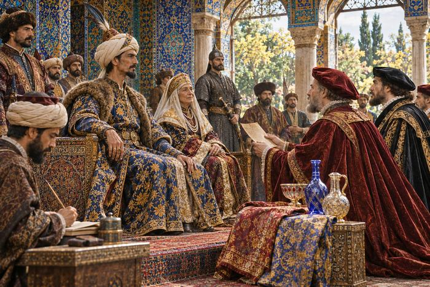
1468–1501Dövlət
1467-ci ildə Ağqoyunlu hökmdarı Uzun Həsən Cahanşahı məğlub edir və az sonra paytaxtı Diyarbəkirdən Təbrizə köçürür. O, vergiləri nizama salan «Qanunnamə»ni tərtib etdirir, Venesiya ilə Osmanlıya qarşı ittifaq bağlayır. Anası Sara xatun Şərqin tanınmış qadın diplomatlarından biridir. 1473-cü ildə Uzun Həsən Otluqbeli döyüşündə Sultan II Mehmedin toplarına tab gətirmir. Şimalda isə Şirvanşahlar Bakıda saray kompleksini tamamlayırlar.
Paytaxt: Təbriz
Dünyada bu vaxtKolumb Amerikaya çatır (1492), İtaliyada İntibah dövrüdür.
XVI–XIX əsrlər
Qızılbaş süvariləri, xan sarayları, Arazın iki sahili və ilk neft fəvvarəsi.
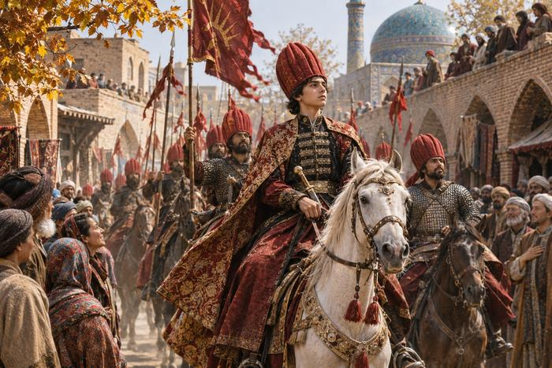
1501–1736İmperiya
Ərdəbil şeyxlərinin nəslindən olan gənc İsmayıl qızılbaş tayfalarının başında hakimiyyət uğrunda mübarizəyə başlayır. 1500-cü ildə Cabanı döyüşündə Şirvanşahı, 1501-ci ildə Şərur düzündə Ağqoyunlu Əlvənd Mirzəni məğlub edir. Təbrizə daxil olub özünü şah elan edir. Dövlətin sərhədləri qısa vaxtda Amudəryadan Fərata qədər genişlənir. Sarayda və orduda Azərbaycan türkcəsi danışılır. Şah İsmayıl özü «Xətai» təxəllüsü ilə ana dilində şeirlər yazır.
Paytaxt: Təbriz
Dünyada bu vaxtLeonardo «Mona Liza»nı çəkir, Avropada Reformasiya başlayır (1517).
SualSəfəvi dövləti
Şah İsmayıl hansı təxəllüslə şeir yazırdı?
«Həqiqi» Qaraqoyunlu Cahanşahın təxəllüsüdür. Xətainin «Dəhnamə» poeması ana dilində yazılmış ilk məsnəvilərdəndir.
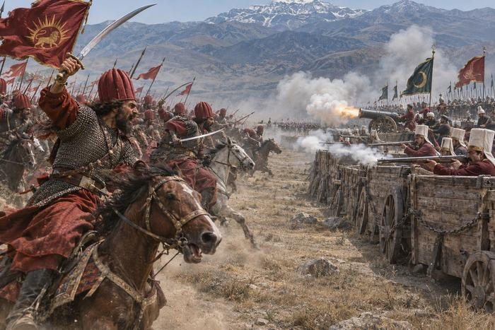
23 avqust 1514Döyüş
İki türk dövləti, Səfəvilər və Osmanlılar Şərqi Anadolu uğrunda toqquşur. Sultan I Səlimin ordusunda toplar və tüfəngli yeniçərilər var. Şah İsmayılın qoşunu isə qılınca və süvari hücumuna arxalanır. Qızılbaş süvariləri Osmanlı cinahını yarsa da, top atəşi döyüşün taleyini həll edir. Şah yaralanır, Səlim Təbrizə girir, lakin orada bir həftədən bir az artıq qala bilir. Çaldırandan sonra Səfəvi ordusunda topçu və tüfəngçi dəstələri yaradılır.
Çaldıran düzü, Maku yaxınlığı
Dünyada bu vaxtMaqellanın gəmiləri dünyanı dolanır (1519–1522).
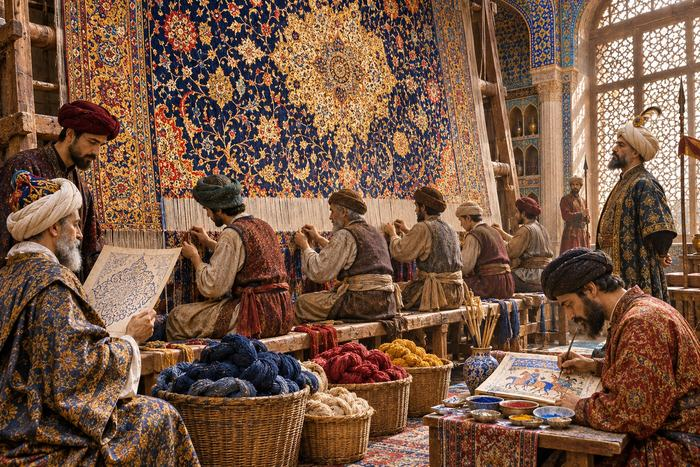
XVI–XVII əsrlərİmperiya
Osmanlı ilə müharibələr on illərlə davam edir. I Şah Təhmasib 1555-ci ildə Amasya sülhünü bağlayır və paytaxtı sərhəddən uzağa, Qəzvinə köçürür. 1587-ci ildə taxta çıxan I Şah Abbas ordunu yenidən qurur, 1603–1607-ci illərdə itirilmiş Azərbaycan torpaqlarını geri alır. Paytaxt İsfahana köçür. Bu əsrlər sənətin qızıl dövrüdür: Təbriz miniatür məktəbinin ustaları, Ərdəbil məqbərəsi üçün toxunan «Şeyx Səfi» xalçası, Füzulinin «Leyli və Məcnun»u dünya mədəniyyətinin inciləridir.
Paytaxt: Təbriz, Qəzvin, İsfahan
Dünyada bu vaxtŞekspir «Hamlet»i yazır, Qaliley teleskopla göyə baxır.
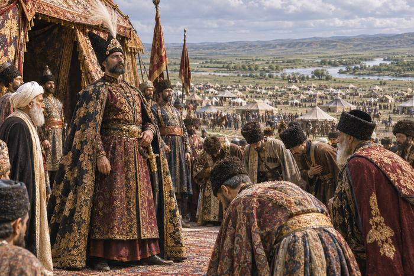
1736–1747İmperiya
Səfəvi dövləti zəifləyir, Azərbaycan torpaqları Osmanlı ilə Rusiya arasında bölünür. Əfşar türk tayfasından olan sərkərdə Nadir bu torpaqları bir-bir geri alır. 1736-cı ilin martında Muğan düzündə, Kürlə Arazın qovuşduğu yerdə böyük qurultay toplanır və Nadir şah seçilir. O, Hindistana yürüş edir, Dehlini alır, məşhur «Kuhi-nur» almazını və Tovuz taxtını gətirir. Ağır vergilər üsyanlara səbəb olur. 1747-ci ildə Nadir şah sui-qəsd nəticəsində öldürülür və imperiyası dağılır.
Muğan düzü
Dünyada bu vaxtAvropada Maarifçilik əsridir, Rusiyada Peterburq yeni paytaxtdır.
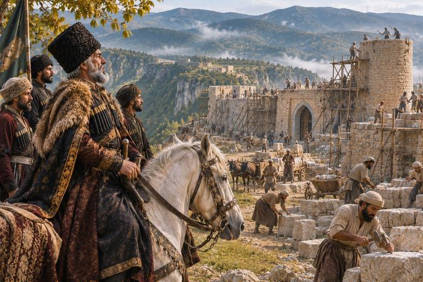
1747 – XIX əsrin əvvəliXanlıqlar
Nadir şahın ölümündən sonra Azərbaycan iyirmiyə yaxın müstəqil xanlığa parçalanır. Hər xanın öz sarayı, qoşunu və sikkəsi var. Şəkidə Hacı Çələbi hələ 1744-cü ildə «Gələrsən-görərsən» qalasında Nadir şaha baş əyməmişdi. Qarabağ xanı Pənahəli xan Bayat və Şahbulaq qalalarından sonra sıldırım qaya üstündə Şuşanı salır. Qubalı Fətəli xan şimal-şərq torpaqlarını birləşdirir. 1795-ci ildə Şuşa Ağa Məhəmməd şah Qacarın ordusuna qarşı 33 gün müdafiə olunur.
Şuşa, Şəki, Quba, Gəncə, Bakı
Dünyada bu vaxtABŞ müstəqilliyini elan edir (1776), Fransada inqilab baş verir (1789).
SualXanlıqlar dövrü
Şuşa şəhərinin əsasını kim qoyub?
Qarabağ xanı Pənahəli xan şəhəri 1750-ci illərdə salıb. İlk vaxtlar onun adı ilə Pənahabad adlanırdı.
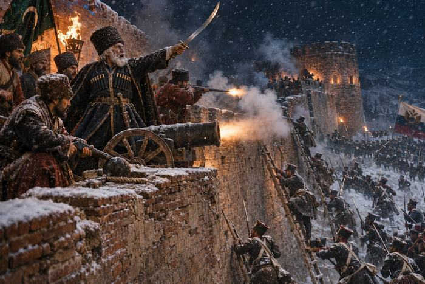
3 yanvar 1804Döyüş
XIX əsrin əvvəlində Rusiya imperiyası Cənubi Qafqaza irəliləyir. General Sisianov Gəncə xanı Cavad xandan qalanı təslim etməyi tələb edir. Xan rədd cavabı verir: qalanı yalnız döyüşlə almaq olar. 1804-cü il yanvarın 3-nə keçən gecə rus qoşunu hücuma keçir. Cavad xan qala divarında əlində qılınc vuruşaraq həlak olur, oğlu Hüseynqulu ağa da onun yanında can verir. Gəncənin süqutundan sonra xanlıqlar bir-bir tabe edilir.
Gəncə qalası
Dünyada bu vaxtNapoleon Fransanın imperatoru olur (1804).
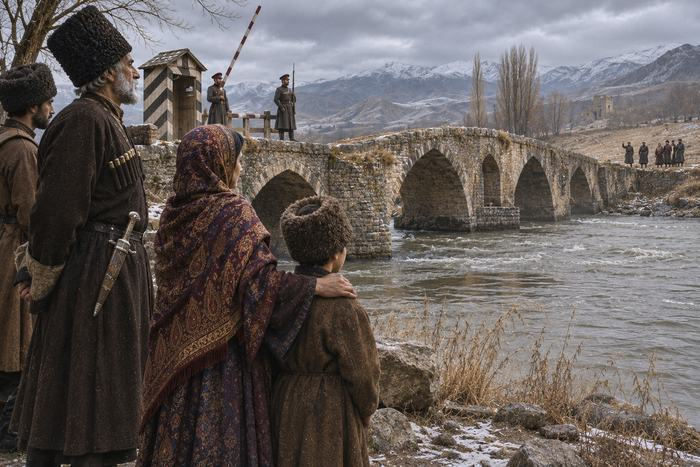
1813–1828Müqavilə
Rusiya ilə Qacarlar dövləti Azərbaycan torpaqları uğrunda iki müharibə aparır. 1813-cü il Gülüstan müqaviləsi ilə şimal xanlıqlarının çoxu Rusiyaya keçir. 1826-cı ildə müharibə yenidən başlayır və 1828-ci ilin fevralında Təbriz yaxınlığındakı Türkmənçay kəndində son müqavilə imzalanır. Naxçıvan və İrəvan xanlıqları da Rusiyaya verilir, sərhəd Araz çayı boyunca keçir. Bir xalq iki imperiya arasında bölünür. Arazın o tayı ilə bu tayı arasındakı həsrət ədəbiyyatın və musiqinin əsas mövzularından birinə çevrilir.
Gülüstan, Türkmənçay
Dünyada bu vaxtYunanıstan müstəqillik qazanır, ilk dəmir yolları çəkilir.
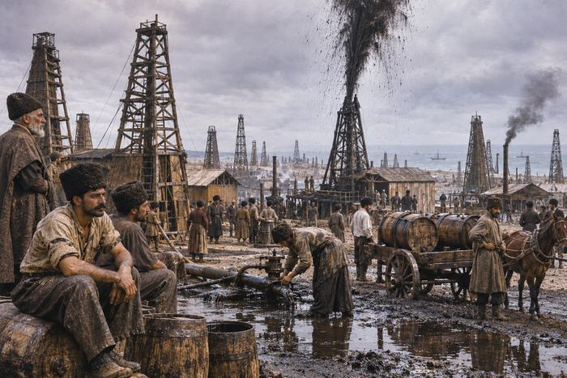
XIX əsr – XX əsrin əvvəliOyanış
1846-cı ildə Bakıda, Bibiheybətdə mexaniki üsulla neft quyusu qazılır: bu, dünyada ilk belə quyulardandır. 1870-ci illərdən neft bumu başlayır, Nobel qardaşları və yerli milyonçular Bakını dünyanın neft paytaxtına çevirir. 1901-ci ildə dünya neftinin yarısı burada çıxarılır. Hacı Zeynalabdin Tağıyev neft pulu ilə teatr, fabrik və müsəlman qızlar üçün ilk dünyəvi məktəb tikdirir. Bu, milli oyanış dövrüdür: 1873-cü ildə ilk teatr tamaşası oynanılır, 1875-ci ildə Həsən bəy Zərdabi «Əkinçi» qəzetini çıxarır, 1908-ci ildə Üzeyir Hacıbəyli müsəlman Şərqinin ilk operasını, «Leyli və Məcnun»u səhnəyə qoyur.
Bakı
Dünyada bu vaxtEdison elektrik lampasını yaradır (1879), ilk avtomobillər yollara çıxır.
SualNeft, qəzet və opera
Azərbaycan dilində ilk qəzet hansıdır?
«Əkinçi»ni Həsən bəy Zərdabi 1875-ci il iyulun 22-də çıxarıb. Bu gün Milli Mətbuat Günü kimi qeyd olunur.
XX–XXI əsrlər
İki respublika, müharibələr, itirilən və qaytarılan torpaqlar.
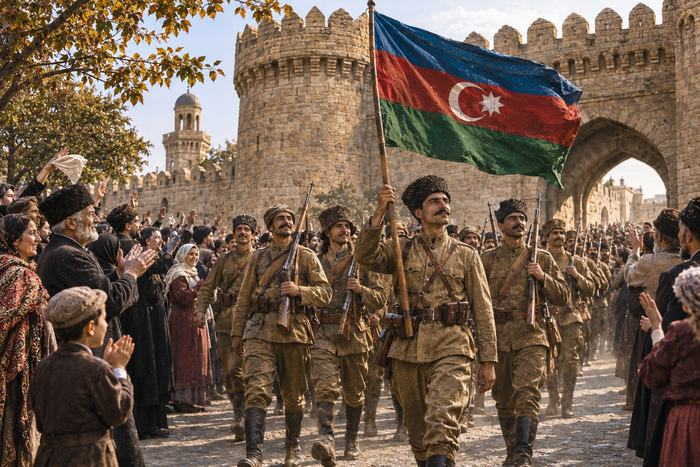
28 may 1918 – 28 aprel 1920Respublika
Rusiya imperiyası dağılır. 1918-ci ilin martında Bakıda və başqa qəzalarda minlərlə azərbaycanlı qətlə yetirilir; Azərbaycanda 31 mart Soyqırımı Günü kimi anılır. Mayın 28-də Milli Şura İstiqlal bəyannaməsini qəbul edir: müsəlman Şərqində ilk parlamentli respublika yaranır. Sentyabrın 15-də Qafqaz İslam Ordusu və Azərbaycan əsgərləri Bakını azad edir. Cümhuriyyət cəmi 23 ay yaşayır, amma çox iş görür: üçrəngli bayraq, parlament, ordu, Bakı Dövlət Universiteti. Qadınlar bir çox Avropa ölkəsindən əvvəl səsvermə hüququ alır. 1920-ci ilin yanvarında Paris sülh konfransı Azərbaycanın müstəqilliyini tanıyır.
Bir kərə yüksələn bayraq bir daha enməz!
Məhəmməd Əmin Rəsulzadə
Tiflis, Gəncə, Bakı
Dünyada bu vaxtBirinci Dünya müharibəsi bitir, üç imperiya dağılır.
SualAzərbaycan Xalq Cümhuriyyəti
Azərbaycan Xalq Cümhuriyyəti neçə ay yaşadı?
28 may 1918-ci ildən 28 aprel 1920-ci ilə qədər. Buna baxmayaraq o, müsəlman Şərqində ilk parlamentli respublika kimi tarixə düşdü.
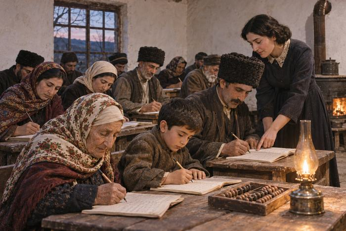
1920–1940Sovet dövrü
1920-ci il aprelin 28-nə keçən gecə XI Qızıl Ordu sərhədi keçir və Cümhuriyyət süqut edir. May ayında Gəncədə sovet hakimiyyətinə qarşı üsyan qalxır, lakin yatırılır. Azərbaycan 1922-ci ildə SSRİ-nin tərkibinə daxil edilir. Fabriklər tikilir, savadsızlıq aradan qaldırılır, ali məktəblər və teatrlar açılır. Eyni zamanda kəndlilərin torpağı əlindən alınır, əlifba iki dəfə dəyişdirilir. 1937-ci ilin repressiyası xalqın ən savadlı övladlarını aparır: Hüseyn Cavid, Mikayıl Müşfiq, Əhməd Cavad və minlərlə başqası güllələnir və ya sürgündə həlak olur.
Bakı
Dünyada bu vaxt1929-cu ildə dünya iqtisadi böhranı başlayır.
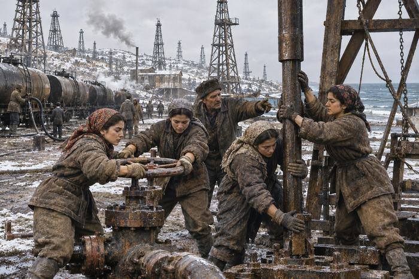
1941–1945Müharibə
İkinci Dünya müharibəsində Hitlerin əsas hədəflərindən biri Bakı neftidir. Sovet ordusunun təyyarə və tanklarının yanacağının çoxunu Bakı verir: neftçilər gecə-gündüz işləyir, qadınlar və yeniyetmələr buruqlara çıxır. Azərbaycandan 600 mindən çox insan cəbhəyə gedir, onların təxminən yarısı geri qayıtmır. General Həzi Aslanov tank briqadası ilə Stalinqraddan Baltik sahillərinə qədər döyüşür, Mehdi Hüseynzadə İtaliya və Yuqoslaviya partizanları arasında «Mixaylo» adı ilə əfsanəyə çevrilir. 1949-cu ildə açıq dənizdə Neft Daşları şəhərciyi salınır.
Bakı və cəbhələr
Dünyada bu vaxt1945-ci ildə müharibə bitir, BMT yaranır.
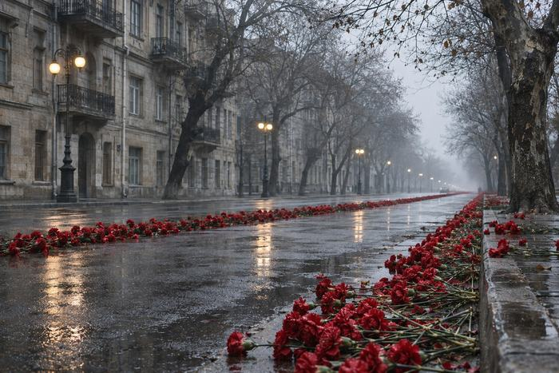
1988–1991Müstəqillik
1988-ci ildə Qarabağ münaqişəsi başlayır, Bakıda Azadlıq meydanına yüz minlərlə insan toplaşır. Xalq hərəkatını boğmaq üçün 1990-cı il yanvarın 20-nə keçən gecə sovet ordusu Bakıya yeridilir. Tanklar dinc əhalinin üzərinə gedir. Rəsmi məlumata görə 147 nəfər həlak olur, yüzlərlə insan yaralanır. Şəhər şəhidlərini qərənfillərlə yola salır. O gecə imperiyaya qalan son inam da ölür. 1991-ci il oktyabrın 18-də Ali Sovet Dövlət müstəqilliyi haqqında Konstitusiya Aktını qəbul edir. Azərbaycan yenidən müstəqildir.
Bakı, Azadlıq meydanı
Dünyada bu vaxtBerlin divarı uçur (1989), SSRİ dağılır (1991).
Sual20 Yanvar və müstəqillik
Dövlət müstəqilliyi haqqında Konstitusiya Aktı nə vaxt qəbul olunub?
28 may 1918 Cümhuriyyətin yarandığı gündür, 12 noyabr 1995-ci ildə isə müstəqil Azərbaycanın Konstitusiyası qəbul olunub.
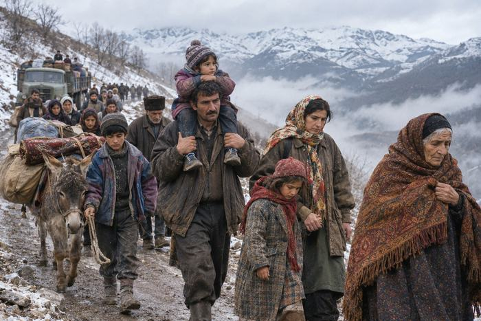
1988–1994Müharibə
Dağlıq Qarabağ uğrunda münaqişə müharibəyə çevrilir. 1992-ci il fevralın 26-na keçən gecə Xocalı şəhərində dinc sakinlər kütləvi şəkildə qətlə yetirilir: rəsmi məlumata görə 613 nəfər, onlardan 106-sı qadın, 63-ü uşaqdır. Azərbaycanda bu faciə Xocalı soyqırımı kimi anılır. 1992–1993-cü illərdə Şuşa, Laçın və daha yeddi rayon işğal olunur, yüz minlərlə insan qaçqın və məcburi köçkünə çevrilir. BMT Təhlükəsizlik Şurası dörd qətnamə qəbul edib işğalçı qüvvələrin çıxarılmasını tələb edir. 1994-cü ilin mayında atəşkəs elan olunur, sentyabrında isə xarici neft şirkətləri ilə «Əsrin müqaviləsi» imzalanır.
Qarabağ
Dünyada bu vaxtAvropa İttifaqı yaranır (1993), internet dünyaya yayılır.
1994–2019Müasir dövr
«Əsrin müqaviləsi» Xəzər neftini dünya bazarına açır. 2006-cı ildə Bakı–Tbilisi–Ceyhan kəməri ilə Azərbaycan nefti Aralıq dənizinə çatır. Neft gəlirləri ilə yollar, məktəblər, yeni şəhər məhəllələri tikilir. 2013-cü ildə ölkənin ilk peyki «Azerspace-1» orbitə çıxır. Bakı «Eurovision» mahnı müsabiqəsinə, ilk Avropa Oyunlarına və «Formula-1» yarışlarına ev sahibliyi edir. 2020-ci ilin sonunda Cənub Qaz Dəhlizi ilə Xəzər qazı Avropaya çatır.
Bakı, Səngəçal
Dünyada bu vaxtSmartfonlar və sosial şəbəkələr gündəlik həyata girir.
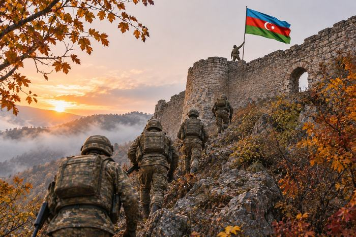
27 sentyabr – 10 noyabr 2020Zəfər
2020-ci il sentyabrın 27-də cəbhə boyu döyüşlər başlayır. 44 gün ərzində Azərbaycan Ordusu Cəbrayıl, Füzuli, Zəngilan və Qubadlını azad edir. Noyabrın 8-də əsgərlər sıldırım qayaları dırmaşaraq Şuşaya daxil olurlar. Bu gün Zəfər Günü kimi qeyd olunur. Noyabrın 10-da imzalanan üçtərəfli bəyanatla müharibə dayanır, Ağdam, Kəlbəcər və Laçın döyüşsüz qaytarılır. 2023-cü ilin sentyabrında Azərbaycan Qarabağda suverenliyini tam bərpa edir. Azad edilmiş torpaqlarda şəhərlər və kəndlər yenidən qurulur, keçmiş köçkünlər evlərinə qayıdır. 2025-ci ilin avqustunda Vaşinqtonda Azərbaycanla Ermənistan sülh sazişinin mətnini paraflayır.
Qarabağ, Şuşa
Dünyada bu vaxt2024-cü ildə Bakı BMT-nin COP29 iqlim konfransına ev sahibliyi edir.
SualVətən müharibəsi
Zəfər Günü hansı tarixdə qeyd olunur?
8 noyabr 2020 Şuşanın azad edildiyi gündür. 27 sentyabr isə Anım Günü kimi qeyd olunur.
Bu gün
Bir yarım milyon ili arxada qoydun. Bu torpağın tarixi mağaradakı ocaqdan başlayıb və hələ bitməyib. Növbəti səhifəni sənin nəslin yazacaq.
Faktlar: Azərbaycan tarixi dərslikləri və yeddi cildlik «Azərbaycan tarixi» (AMEA), UNESCO-nun Ümumdünya İrs Mərkəzi, Britannica, Encyclopaedia Iranica, Vikipediya və abidələrin rəsmi səhifələri. Xəritə: NOAA ETOPO relyef modeli və Natural Earth.
Qədim dövrlərin tarixləri təxminidir və alimlər arasında fərqli yozumlar var; burada ən çox qəbul olunan tarixlər verilib. Köhnə təqvimlə yazılmış günlər ayrıca qeyd olunub. Şəkillər dövrü göz önünə gətirmək üçün hazırlanmış illüstrasiyalardır, tarixi foto və ya o dövrün rəsmi deyil; geyim, silah və tikililərin detalları təxminidir.